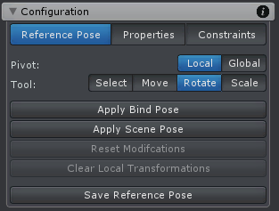
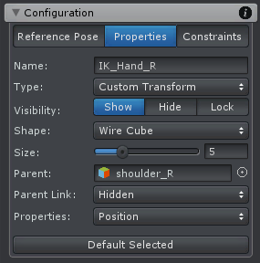
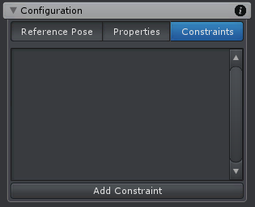

Configuration
Reference Pose
The reference pose describes the initial pose that is applied to joints/transforms when no key frames are defined. It can also be used as reference pose by the Inverse Kinematics Constraint.
Config Mode - Reference Pose
| UI Element | Description |
|---|---|
| Pivot | The pivot mode changes the orientation of the move, rotate and scale tool. It can either by aligned to the global coordinate system of the scene or the local coordinate system of the current selected joint/transform. |
| Select Tool | The select tool allows selecting joints/transforms. Selecting is also possible with every other tool, but the select tool displays no tool handle. This is useful as the tool handle often occludes the joint/transform that should be selected. To select a joint/transform it needs to be clicked with the left mouse button. When holding CONTROL while clicking, previous selected joints/transform stay selected. When holding SHIFT while clicking all children of the clicked joint/transform are selected. |
| Move Tool | With the move tool the position of a joint/transform can be changed. SHIFT enables the free move mode where movement can be performed freely in all 3 dimensions. Joints (bones) are usually not modified with this tool. |
| Rotate Tool | With the rotate tool the orientation of a joint/transform can be changed. |
| Scale Tool | With the scale tool the local scale of a joint/transform can be changed. The scale tool only supports the local pivot mode. Joints (bones) are usually not modified with this tool. |
| Apply Bind Pose | This will reset all bones to the pose in which they have been skinned in the 3D modeling application (usually the T-Pose). Transforms are not affected by this function. |
| Apply Scene Pose | This will reset all bones and transforms to the pose the animated GameObject had before it was applied to the Pose Editor. |
| Reset Modifications | Resets the modifications of the selected joint/transform. A context menu to choose which properties of the selected joints/transforms should be reset is shown. Modified bones are displayed in red (unless the color was changed in the Options). |
| Clear Local/Global Transforms | Zeroes the local or global transforms of the selected joints/transforms depending on the selected pivot mode. A context menu will popup to choose which transform properties (position, rotation or scale) should be cleared. |
| Save Reference Pose | Saves the current pose as reference pose. This saves all modifications. |
Properties
This category allows modifying all properties of a joint/transform. Multi editing is supported (when multiple joints/transforms are selected).
Config Mode - Properties
| UI Element | Description |
|---|---|
| Name | The name of the selected joint/transform. Can only be modified for custom joints/transforms. It is not allowed to have joints/transforms that are siblings in the hierarchy with the same name. |
| Type | The type of the selected joint/transform. It can be changed from custom joint to custom transform or vice versa. Only possible for custom joints/transforms. |
| Visibility |
The visibility of the selected bone/transform.
|
| Shape |
This option is only available for transforms. Defines the shape that is used to visualize a transform.
|
| Size | The size of the bone/transform in the scene view. |
| Parent | The parent of the selected joint/transform. Can only be changed for custom joints/transforms. |
| Parent Link | The style in which the connection to the joint's/transform's parent is visualized.
|
| Properties | Defines which properties (rotation, position and scale) should be enabled for the selected generic joint/transform. If you remove the checkmark from a property, it won't be visible in the Clip Editor anymore and it won't be included in the exported animation. This is very useful to reduce the number of animated properties of generic characters in the Clip Editor. For humanoid bones, only the rotation property is supported. Please note that this setting affects all animation clips in the current UMotion project. |
Constraints
Constraints are components that add advanced functionality to joints/transforms.
Config Mode - Constraints
A joint/transform needs to be selected (either in the Rig Hierarchy or in the Scene View). By clicking on the Add Constraint button in the Constraints tab a context menu with all different constraints is shown. The clicked constraint will then be added to the selected joint/transform.
Constraints usually have properties that have to be setup in Config Mode and Animated Properties that are adjusted in Pose Mode. Setup properties are applied to all clips in the project whereby Animated Properties can be keyed in every clip just like position, rotation and scale properties.
Constraints are only executed in Pose Mode.
The various constraints are covered in an own chapter: Constraint System